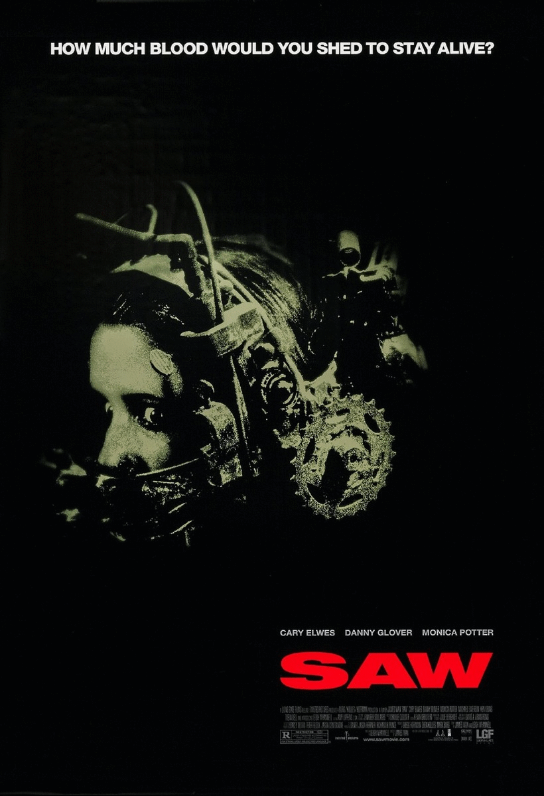

NOTE: This site is non-indexed, so you can only view this site if you've been given the URL.
BLOG & UPDATES
October 26th 2026
Well, I'm gonna have to wait even longer now until I can get these shitty, broken hinges on my laptop fixed. The guy called and said he'd take a look at it on Friday. My dude... FRIDAY?!?!? I was meant to go out and get this thing fixed on wednesday... Anyways, I suppose that means I have a bit more time to give updates on this site, as I mentioned the FIRST TIME. Anyways, Have a great night everybody.
October 29th 2026
Hey dudes, I hope you all are having a great day. I just quickly wanted to chime in and mention that today is SAW's 22nd birthday! The first Saw is one of of my all-time favourite films, and I've always been influenced by James Wan and Leigh Whannel, so big props to them for putting together such a killer' film. Saw IIs 21st birthday is coming up soon too, so I'll definitely put up A little tribute like this when that time rolls around. As for now, I'd highly recommend watching SAW if you havent, or even listen to "Wonderful World" by Psychophomps, as it was featured in the film. That's all I got for now, Have a great night everybody!

October 30th 2026
Alright folks, Today I'm going to get my computer fixed. I have no idea how long it'll take considering workloads and other stuff. Obviously, the site is going to be a bit inactive, but to compensate, I've put out the next "Track of the Week" and "Album of the Month" early. I've also got another "ambient (and take this with a grain of salt)" track out, so check the Audio Catalogue if you're interested. I apologise if this one was a bit... Messy, but I'm kind of in a rush to get everything done on here before I give this hunk of junk in to get fixed (another mans trash is another mans treasure, and I'm both in this situation). Anyways, I hope everyone has a great day, night and week! Peace out dudes.
Archliver - 2026